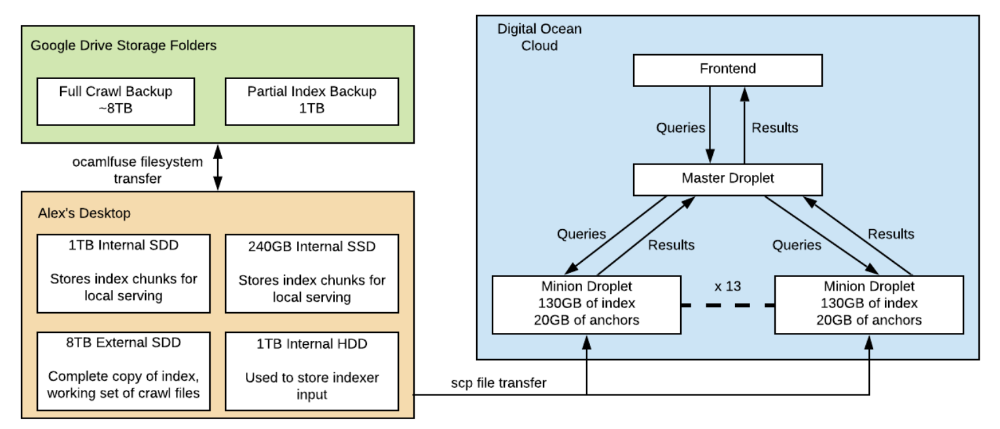
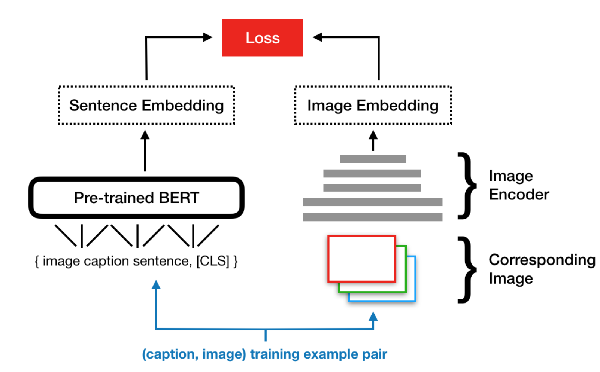

Lahav LipsonI am a first year Ph.D student in Computer Science at Princeton University, working with Jia Deng as part of the Princeton Vision & Learning Lab. I completed my undergrad in computer science at the University of Michigan, where I was fortunate to work with David Fouhey and members of the Fouhey AI Lab on weakly supervised scene understanding. Previously, I also researched 3D visualization for VR with Michael Nebeling in the Michigan Information Interaction Lab Click to Reveal Email / GitHub / Google Scholar / LinkedIn / Resume |

|
Research |

|
Collision Replay: What Does Bumping Into Things Tell You About Scene Geometry?Alexander Raistrick, Nilesh Kulkarni and David F. Fouhey BMVC 2021 (Oral) website / paper / |

|
MRAT: The Mixed Reality Analytics ToolkitM. Nebeling, M. Speicher, X. Wang, S. Rajaram, B.D. Hall, Z. Xie, A.R.E. Raistrick, M. Aebersold, E.G. Happ, J. Wang, Y. Sun, L. Zhang, L. Ramsier, R. Kulkarni CHI 2020 (Best Paper) website / paper / video / code / |
Coursework |
|  |
Maximal Munch: Internet Search Engine in C++U-M EECS 398-001 Fall 2019 - System Design of a Search Engine Alexander Raistrick, Adolfo Apolloni, Austin Kikeintveld, Brandon Kayes, Daniel Hoekwater and Ryan Wunderly 2019-04-25 Internet Search Engine built from scratch in C++, named after this parsing principle. Indexed over 140M web pages, and served results in 1-3ms for most queries. |
|  |
Multimedia Search from Composite InputsU-M EECS 442 Fall 2019 - Computer Vision Alexander Raistrick, Adolfo Apolloni and Omar Al-Ejel 2019-04-25 poster / Best Poster award for work in implementing BERT-based image search, and follow up exploration on joint image-text inputs for multimodal image search. |
Teaching |